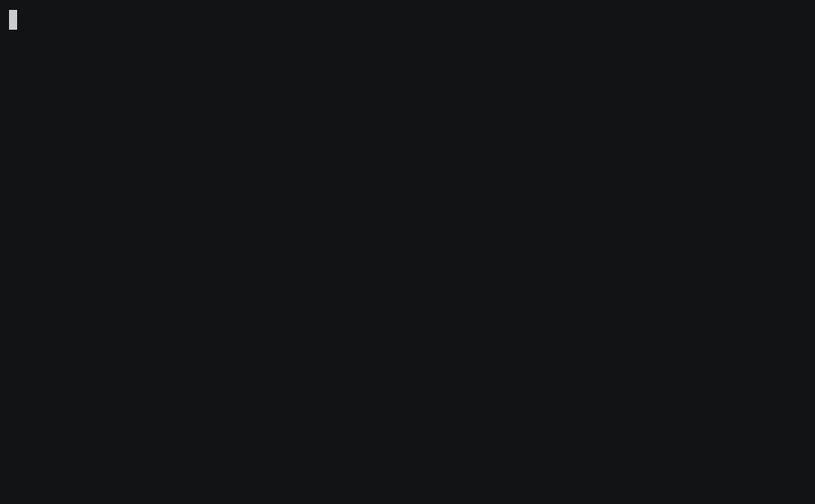

~/install
Two ways
Download the binary. Grab the tarball for your platform, check it against the published SHA256SUMS, and put it on your PATH. Then add one line to your shell config.
$ sha256sum -c SHA256SUMS --ignore-missing && tar -xzf whetuu-*.tar.gz && mv whetuu ~/.local/bin/
Tarballs and checksums are on the releases page, for macOS and Linux on x86-64 and ARM64.
Or run the installer. It does the same thing, and saves you a uname. It detects your platform, verifies the download, puts the binary in ~/.local/bin, and adds the init line to the config of the shell you actually use. Running it twice changes nothing.
$ curl --proto '=https' --tlsv1.2 -fsSL https://yamafaktory.github.io/whetuu/install.sh | sh
Read the script first if you would rather not pipe to a shell. It verifies nothing you could not verify yourself.
Then open a new shell. That is the whole install.
Would rather edit your own dotfiles? Run it with WHETUU_NO_MODIFY=1 and it prints the lines instead of writing them. whetuu init <shell> prints them too, along with the file they belong in. A PATH line appears only when ~/.local/bin is not already on your PATH.
Needs a Nerd Font. whetuu draws the git branch, the language logos and the star with Nerd Font glyphs. Most terminal setups already run one, so try it first. If the star and the branch glyph come out as empty boxes, switch your terminal font.
Uninstalling
One line for the program, one for the data. The history store and the version cache live under the XDG directories rather than next to the binary, so removing whetuu never takes your history with it. Run whetuu paths first if you want to see both locations, in case $XDG_DATA_HOME or $XDG_CACHE_HOME moves them on your machine.
$ rm ~/.local/bin/whetuu && rm -rf ~/.local/share/whetuu ~/.cache/whetuu
Then delete the # whetuu block from your shell config.
~/demo
See it in a real shell
The status line tracks the branch, the git status and the toolchain version. Pressing the up arrow opens the history picker, which filters as you type and runs what you pick.

~/modules
What it shows
Left to right, each segment appears only when it is relevant.
- user_host
- user@host in bold green, but only over SSH or when you are root, and then in bold red as a warning.
- directory
- The current directory with $HOME collapsed to ~. Keeps the anchor plus as many trailing directories as fit the width.
- git branch
- Branch glyph and current branch, or (detached), in magenta.
- git state
- Any operation underway, in yellow: (rebasing 2/7), (merging), (cherry-picking). Read straight from .git, with no extra subprocess.
- git status
- Conflicts, stashes, staged, modified, untracked, ahead and behind, in one bracketed group.
- language
- Logo and toolchain version in the brand colour, for 39 languages and tools. Detected from a project manifest, a source file extension, or an infra marker.
- cmd_duration
- Timer glyph and elapsed time, when the last command ran for two seconds or more.
- character
- A star, purple by default or in the language brand colour. Turns red after a failed command.
~/picker
A history picker on the up arrow
Commands are recorded once they finish, and only when they exited cleanly, so typos never enter the store. Each is stored with the directory it ran in. The picker opens scoped to the current directory and falls back to all history when there is none. The command that just broke is the one exception. It sits at the top in red until you run another command, so you can pick it and fix it. It is never stored.
Rows are syntax highlighted. The command name, flags, paths, variables, quoted strings and operators each take a colour from your terminal theme, so the picker matches the palette you already run. A command too wide for the window loses its middle to a … rather than its end, which keeps a run of commands sharing one long prefix apart.
- typeFilter. Every word must match, ignoring case.
- ↑ / ↓Move the selection. Up goes further back in time.
- Ctrl+GSwitch between this directory's history and all of it.
- TabCopy the selection into the search field to edit or extend.
- EnterRun it. When nothing matches any more, runs the text as typed.
- EscCancel, leaving whatever you had typed on the command line.
~/commands
Nothing to run day to day
The shell hook drives everything and the picker is on the up arrow, so two of these are called for you and you never type them. This is the whole command surface.
| Command | Does |
|---|---|
whetuu | Print the command list. |
whetuu --version | Print the version. |
whetuu init <fish|bash|zsh> | Print the shell integration script, meant to be sourced or evaled. Prints the setup line instead when run straight into a terminal. |
whetuu render | Render one status line. Called by the shell hook, not by you. |
whetuu history | Open the interactive history picker. |
whetuu history add -- <command> | Record a finished command. Called by the shell hook. |
whetuu paths | Print where the history store and version cache live, and whether each file exists yet. |
render and history add take flags that only the init scripts pass, namely exit status, duration and width. That is why they are left out here.
A fresh install has neither file. whetuu paths marks the missing one rather than hiding it, until the first command is recorded and the first toolchain version is cached. With neither $HOME nor the matching XDG variable set it says so, because then whetuu has nowhere to write.
~/performance
Renders in about 2 ms
A status line runs before every command, which makes it the one thing in your shell that has to be quick. Every module that reads the disk runs at the same time via std.Io, so a render takes about as long as its slowest probe rather than the sum of them all.
| Directory | Render | For comparison |
|---|---|---|
| No repo, no toolchain | 2.3 ms | — |
| Zig repo, 35 files | 3.0 ms | zig version alone: 3.1 ms |
| Monorepo, 8259 files | 20.2 ms | git status alone: 19.3 ms |
Measured with hyperfine --warmup 40 --runs 400 on a 13th gen i9-13900H, ReleaseFast, pinned to the performance cores on an otherwise idle machine. In the monorepo the whole status line takes about as long as git status on its own.
A slow repository cannot hang your shell. Both subprocesses are bounded. Git gets 250 ms and the toolchain probe gets 200 ms, and they run at the same time, so the worst case is the larger of the two. Given a git that hangs for 30 seconds, the status line still returns in 257 ms. It simply drops the git segment.
~/security
Nothing leaves your machine
A status line sees every command you run, and the picker keeps them. That is a lot to hand a small tool, so here is exactly what whetuu does and does not do.
- No network
- There is no socket, no HTTP client and no sync anywhere in the binary. No telemetry and no update check. There is no account and no server to opt out of.
- Two files
- Running, whetuu writes exactly two. The history store, created with mode 600 and reset to it on every write, so one left readable by an older version corrects itself. And a cache of toolchain version strings at ~/.cache/whetuu/versions, which holds nothing else and can be deleted whenever you like.
- Spec paths only
- The binary goes in ~/.local/bin, the history store under $XDG_DATA_HOME and the version cache under $XDG_CACHE_HOME. No directory of our own in your $HOME. whetuu paths prints both data locations.
- One install edit
- The installer appends the init line to the config of the shell in $SHELL, and nothing else. Not the config of a shell you do not use, and never twice. A PATH line joins it only when ~/.local/bin is not already on your PATH. WHETUU_NO_MODIFY=1 makes it print them instead.
- Skip a command
- Start a command with a space and it is never recorded. Use it for the ones carrying a token. Only successful commands are stored at all.
- No shell, ever
- whetuu runs two subprocesses: git and the toolchain version probe. Both get a fixed list of arguments rather than a command line, so nothing you type is ever interpreted as a command. State like a rebase in progress is read straight out of .git with no subprocess at all.
- Escapes defanged
- Every control byte in a command, a branch name or a directory becomes a ? before it reaches your terminal. A repository you just cloned cannot repaint your screen or move your cursor through whetuu.
- Nothing to configure
- No config file means no config parser, no theme format and nothing of yours being executed at startup. The attack surface is the binary and the two commands above.
- One caveat
- The language module picks which toolchain to probe from the files in the current directory, so entering an untrusted repository can make whetuu run something like node --version. It runs whatever your PATH resolves, never a binary from the repository.
- Checkable downloads
- The Linux builds are static musl with no runtime dependencies, and every release ships a SHA256SUMS file. The source is on GitHub and builds from it with one command.